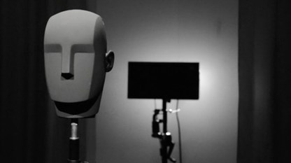
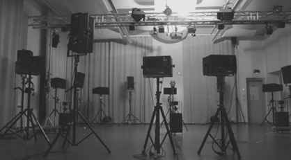

“Soundscapes from Ramallah, Palestine” is a 51 minutes sound installation as a hybrid between soundscape composition and radio feature. Processed and raw field recordings together with interviews by people who are living or once lived in the area of Ramallah, are being used to narrate and question the soundscape of the city and its changes due to the political situation and the continuously changing reality. It is the first result as a master thesis of a research on the topics of listening, soundscapes and politics in general and specifically on the Politics of Listening: Soundscapes from Ramallah, Palestine.
Soundscapes of Ramallah, Palestine
Studio for Electroacoustic Music, Weimar, 2020

